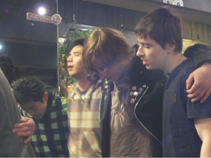

弟子訓練学校 (Discipleship Training School, 通称DTS)
DTSとは、宣教団体YWAMに属する訓練学校で、弟子訓練と世界宣教を目的とした、短期集中型トレーニング・プログラムです。DTSでは、神様との関係のあり方（神を知る）と、失われた魂に対するあり方（神を知らせる）とに焦点が当てられ、クリスチャンとしての土台作りを行います。訓練過程は、３ヶ月間の講義と３ヶ月間の伝道実践（アウトリーチ）期間の２部に構成されています。講義は、一週毎にテーマが決められており、ゲスト講師を国内外からお招きして行われます。但し、学校によって講師とテーマに若干違いがあります。また、講義には通訳が付きますので英語のできない方でも心配はありません。現在日本には三校があり、それぞれ特色があります。
＊講義内容
・神の御声を聞く ・真の悔い改め ・聖霊 ・人間関係
・父なる神様の愛 ・伝道と宣教 ・賛美と礼拝 ・神のご性質
・とりなしの祈り ・内なる癒し ・権利の放棄 ・霊的戦い
・聖書的経済原則 ・帰納的聖書勉強・デボーション・その他
＊伝道実践
３ヶ月間の学びの後、チームとしての伝道旅行が行われます。内容は主に、路傍伝道、教会奉仕、その他のミニストリーに参加します。行き先は、海外と日本国内ですが、その都度の学校によって異なり、スタッフ共々祈って神様の御声に聞き従います。
＊その他
−この訓練を受けるためには、所属教会の主任牧師先生の承認が必要です。
−全寮制となっています。（但し、沖縄のミニDTSは除く。）
−伝道実践のために、ドラマやワーシップダンスなどを学びます。
−申込書類、詳細は各校に直接お問い合わせください。
＊学校
−東京ベース
・お問い合わせ：〒104-0061
東京PO BOX 446
YWAM東京
Email. registrar_ywamtokyo@mac.com
kanto.area.director@gmail.com
http://www.ywamtokyo.org
−大阪ベース
・お問い合わせ：〒533-0031
大阪市東淀川区西淡路3-7-8
Tel.06-6325-1614
Fax.06-6325-1614
Email. osaka.dts@gmail.com
http://www.ywamosaka.com/dts.html（Japanese,Korean, English）
−沖縄ベース
・お問い合わせ：〒904-8691
沖縄市沖縄郵便局私書箱156号
Tel.098-937-9027, 090-2582-5644
Fax.098-937-9047
Email. ywamokinawa@gmail.com
http://www.ywamokinawa.org/